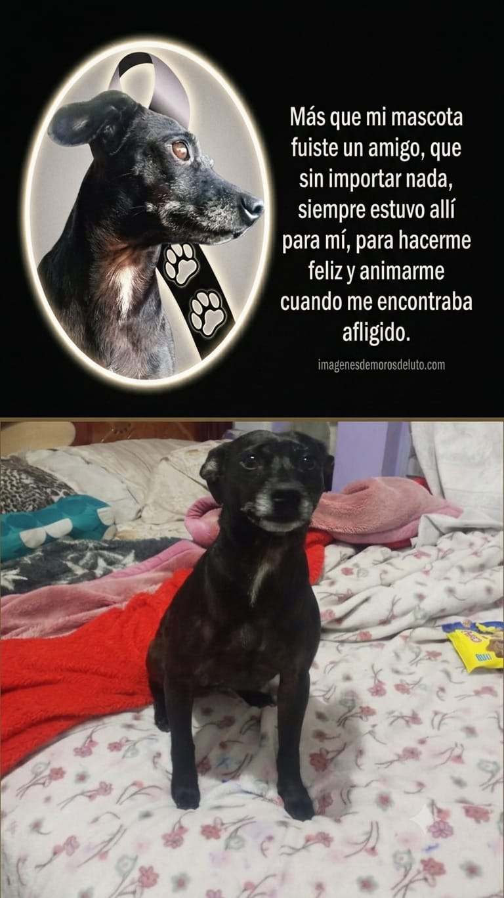
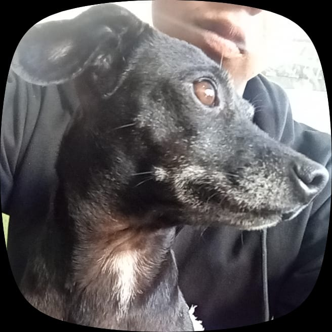
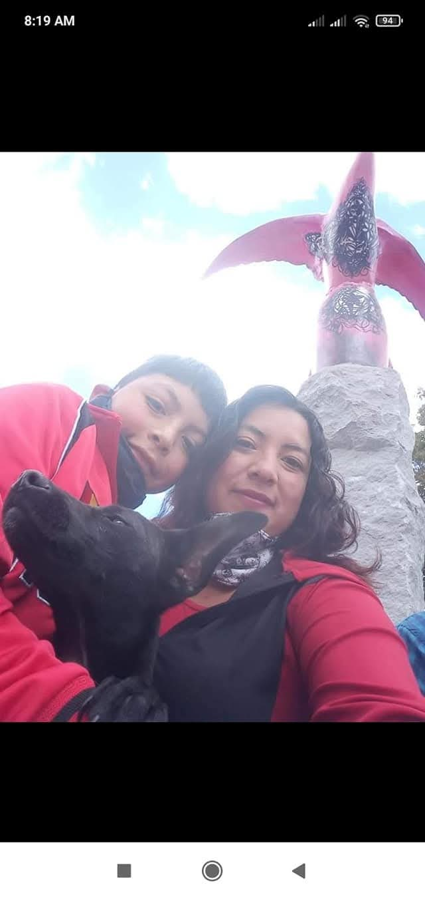
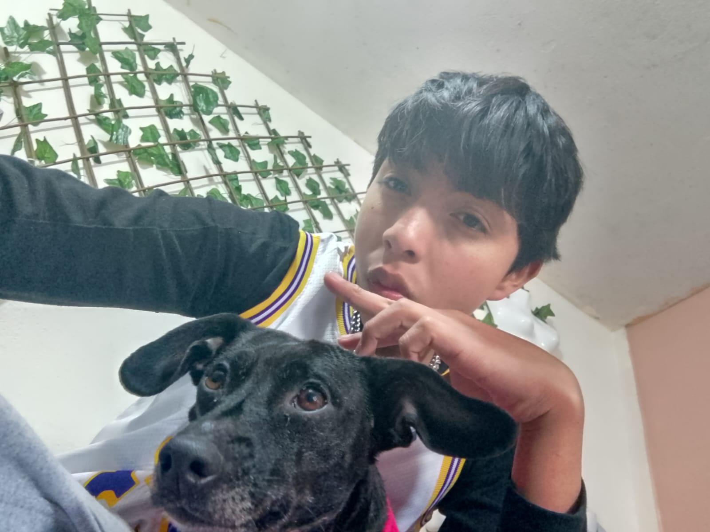
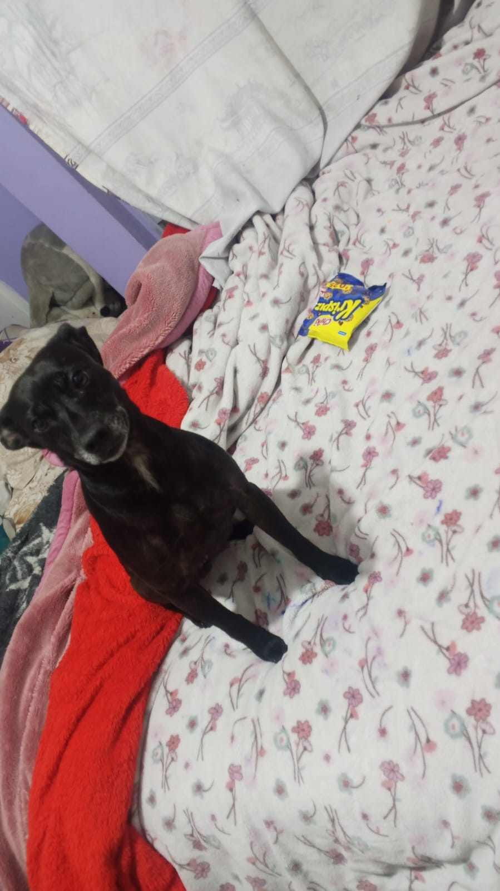

"Siempre vivirás en mi corazón. Gracias por regalarme tantos momentos de felicidad y aventuras vividas junto a ti"
## 🐾 Nuestra Historia Todo comenzó en el año 2020, poco antes de que la pandemia cambiara el mundo. Fue en ese momento cuando una pequeña perrita llamada **Lulú** llegó a mi vida para llenarla de alegría, cariño y momentos inolvidables. Desde el primer día se convirtió en alguien muy especial, y con el paso del tiempo dejó de ser solo una mascota para transformarse en mi mejor amiga, mi compañera de vida y de aventuras. Durante casi siete años compartimos experiencias que siempre llevaré en mi corazón. Uno de los recuerdos más felices era salir juntos en mi bicicleta. A Lulú le encantaba acompañarme en cada recorrido, disfrutando del viento, de los caminos y de cada nueva aventura que vivíamos. No importaba el destino; lo importante era que siempre estábamos juntos. Lulú era una perrita muy alegre, cariñosa, juguetona y llena de energía. Se llevaba muy bien con los vecinos y todos la conocían por su nobleza y su forma tan especial de saludar. Con su ternura lograba sacar una sonrisa a cualquiera que la conociera. Tenía esa capacidad de alegrar los días más difíciles con solo mover la cola o acercarse para pedir una caricia. Para mí fue mucho más que una mascota. Fue una amiga fiel que siempre estuvo a mi lado en los buenos y en los malos momentos. Nunca necesitó palabras para demostrar cuánto me quería; su mirada, su compañía y su cariño eran suficientes para hacerme sentir que nunca estaba solo. Con ella aprendí el verdadero significado de la lealtad, del amor incondicional y de la amistad más sincera. Los años pasaron muy rápido y, sin darme cuenta, Lulú se convirtió en una parte muy importante de mi vida y de mi familia. Cada paseo, cada juego, cada fotografía y cada momento compartido se transformó en un recuerdo que guardaré para siempre. Aunque parecían momentos sencillos, hoy son los tesoros más valiosos que conservo en mi memoria. Después de casi siete años de aventuras, llegó el día más difícil: el momento de despedirnos. Fue un dolor muy grande, porque decir adiós a quien tanto amas nunca es fácil. Sin embargo, prefiero recordar todos los momentos felices que vivimos juntos y agradecer por el hermoso regalo que fue compartir una parte de mi vida con ella. Aunque ya no pueda verla correr a mi lado ni escuchar sus pasos cuando salíamos de aventura, siento que Lulú nunca se ha ido del todo. Vive en cada recuerdo, en cada fotografía y en cada lugar que compartimos. Estoy seguro de que ahora descansa en paz y que, desde el cielo, sigue cuidándome y protegiéndome con el mismo amor con el que siempre lo hizo. Lulú dejó una huella que nadie podrá borrar. Su amor, su alegría y su compañía vivirán para siempre en mi corazón. Mientras exista un recuerdo de ella, seguirá presente en mi vida. Sé que algún día volveremos a encontrarnos, pero hasta entonces la recordaré con una sonrisa, con gratitud y con el inmenso cariño que siempre le tendré. **Gracias, Lulú, por regalarme casi siete años de felicidad. Gracias por cada aventura, por cada paseo en bicicleta, por cada momento compartido y por enseñarme que el amor más puro no necesita palabras. Siempre serás mi compañera, mi mejor amiga y una parte de mi corazón. Nunca te olvidaré. Te amaré por siempre.** ❤️🐾
Cada segundo de este video representa un recuerdo que jamás será olvidado.




Querida lulu mi acompañante de vida y de aventuras... Gracias por cada momento que compartimos. Gracias por recibirme siempre con alegría. Gracias por enseñarme el verdadero significado del amor incondicional hacia una mascota. Aunque hoy ya no estés físicamente, siempre vivirás en mis recuerdos y en mi corazón. Nunca te olvidaré.